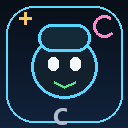

本机语音助手
Voice AI
通过 XiaoZhi 服务器做语音转文字，由本机直连 DeepSeek 生成回复，并可选播报。
功能
- 1纯设备端链路
不需要电脑端 bridge。 - 2自动同步配置
优先读取 XiaoZhi 与 Lua Claw 的 API 配置。 - 3常连与播报
启动后保持小智连接，DeepSeek 回复可尝试转语音。
配置入口
启动 Voice AI 后打开：
/voice_ai/

本机语音助手
通过 XiaoZhi 服务器做语音转文字，由本机直连 DeepSeek 生成回复，并可选播报。
启动 Voice AI 后打开：
/voice_ai/